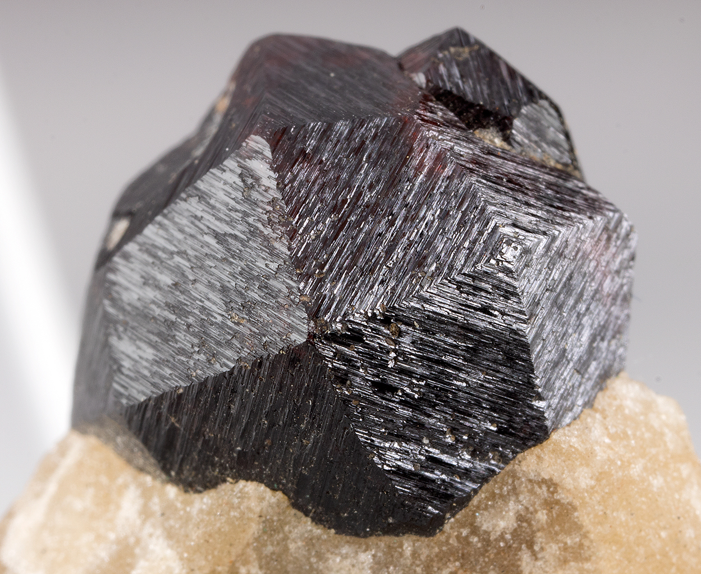
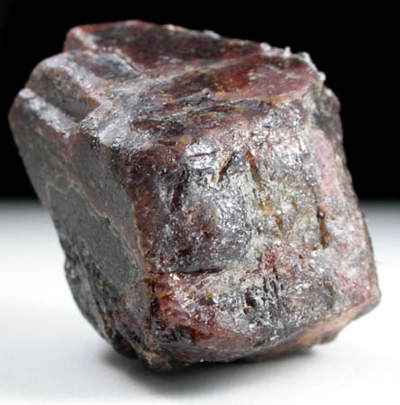
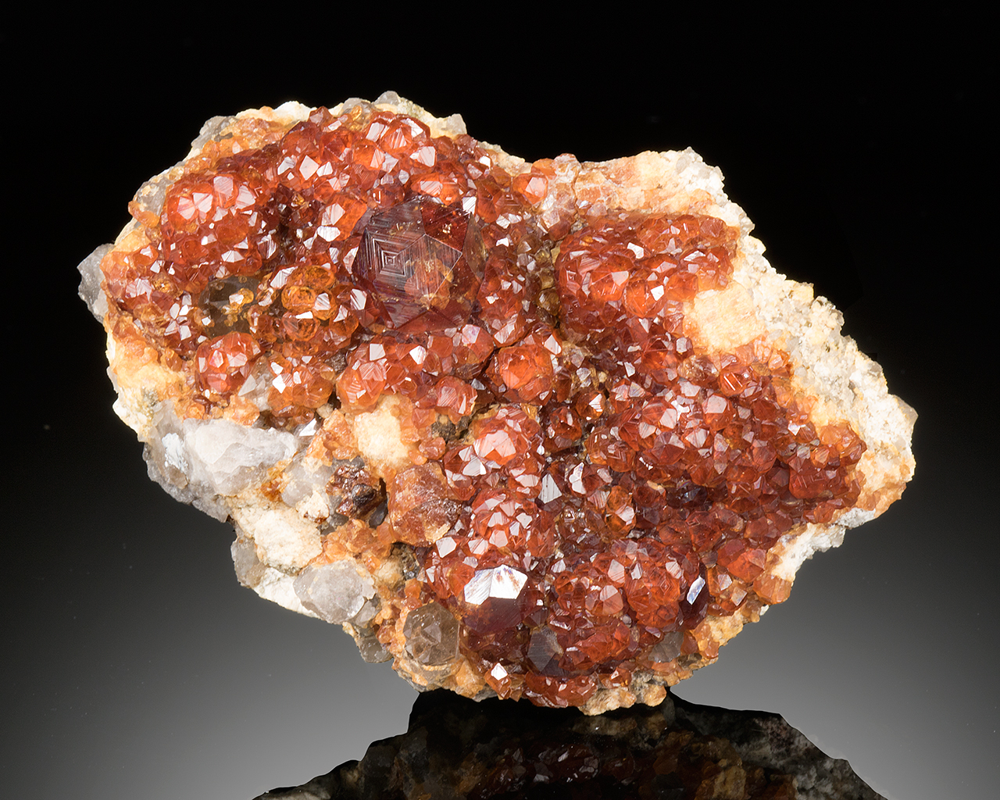
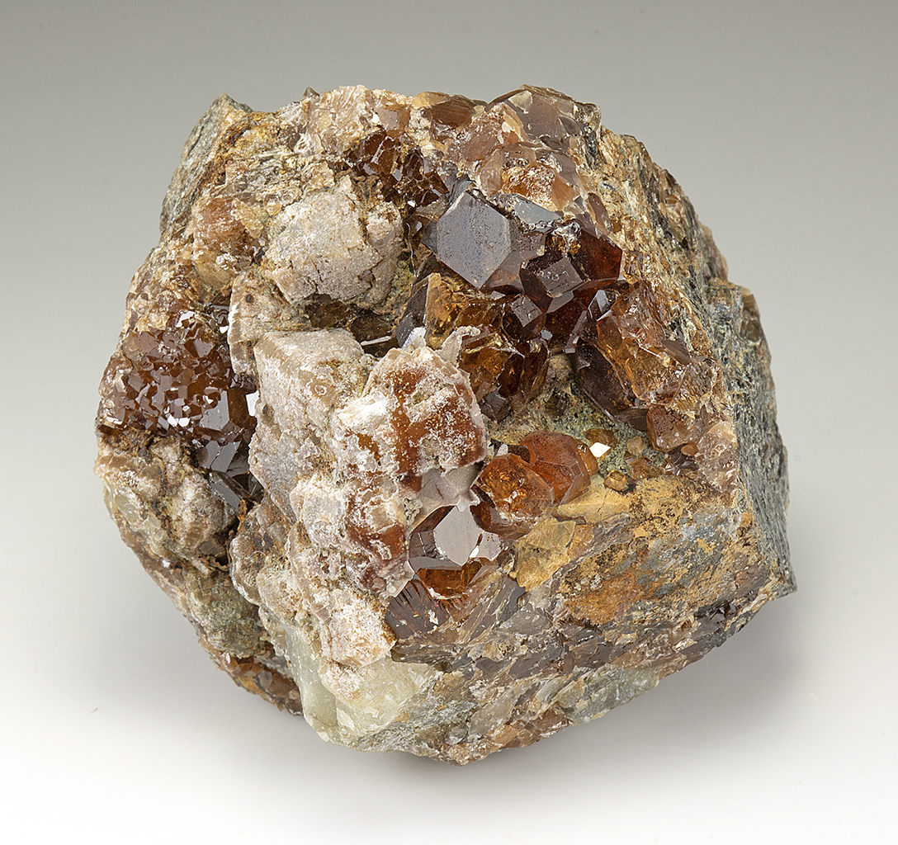
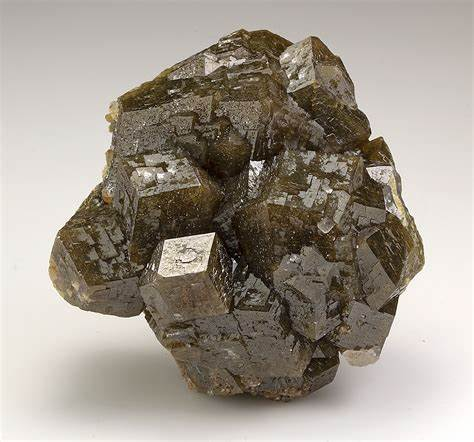
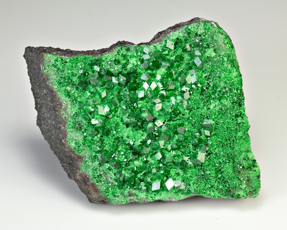
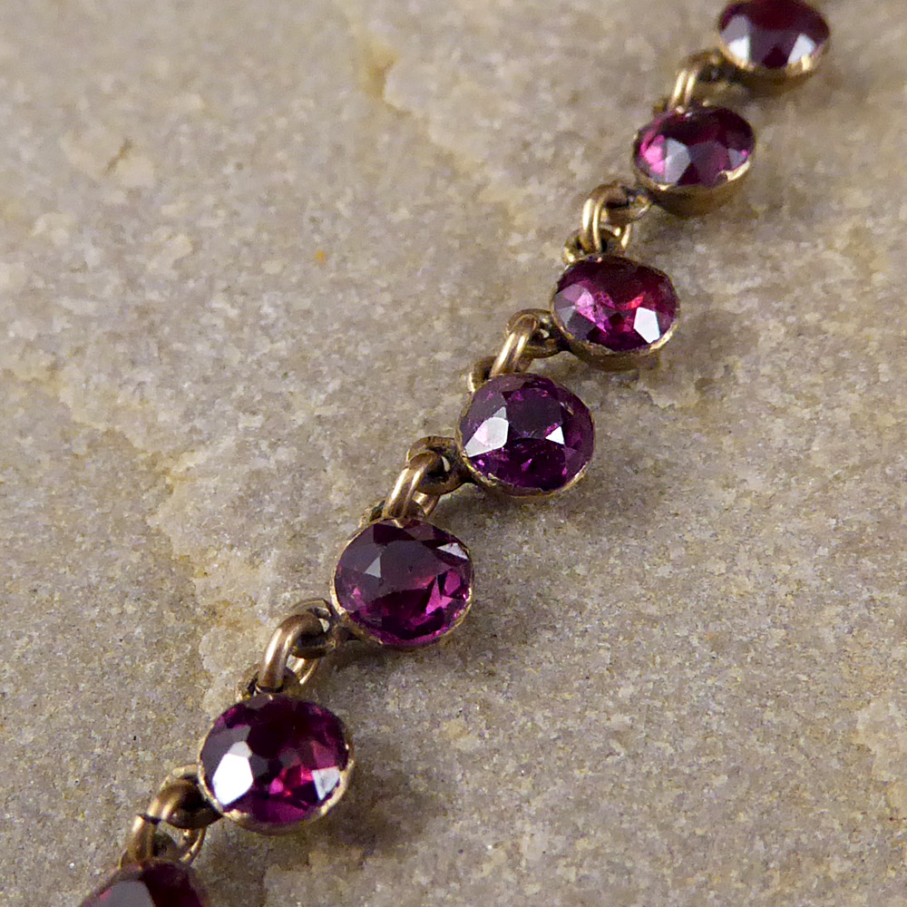

Garnet: The Multifaceted Gemstone
Introduction to Garnet
Garnet is a group of silicate minerals that have been appreciated for their beauty and utility for thousands of years. Known for its diverse colors and rich history, garnet is a popular gemstone in both jewelry and industrial applications. The name "garnet" comes from the Latin word "granatus," meaning "seed-like," likely referring to the gemstone's resemblance to the red seeds of the pomegranate.
Garnets are most commonly recognized for their deep red color, but they can be found in almost every color of the rainbow, including green, orange, yellow, and purple. The variation in color is due to the different chemical compositions found within the garnet group, which includes minerals such as almandine, pyrope, spessartine, grossular, and andradite.
How Garnet Forms
Garnets form under a wide range of geological conditions and are found in many types of rocks, including metamorphic, igneous, and sedimentary rocks. The formation process involves the crystallization of aluminum and other metals under high pressure and temperature. Garnets are typically found in metamorphic rocks such as schist and gneiss, where they form during the metamorphism of shale and other silicate materials.
The crystals often develop in well-formed dodecahedrons or trapezohedrons, and their size can range from microscopic grains to large crystals weighing several kilograms. The conditions under which garnets form influence their composition and color, resulting in the wide variety of garnet types found worldwide.
If you're eager to discover garnet in its natural environment, don't miss our Garnet Gem Mining Maps. These resources will guide you to some of the best rockhounding spots for finding garnet in the wild.
Garnet Varieties
Garnet is not a single mineral but a group of related minerals that share similar crystal structures. The most notable varieties include:
Almandine
Typically deep red to reddish-brown, almandine is one of the most common types of garnet and is often used in jewelry.
Pyrope
Known for its intense red color, pyrope garnet is sometimes referred to as "flaming garnet" and is prized for its clarity and brilliance.
Spessartine
This type of garnet ranges from orange to reddish-orange and is sometimes called "mandarin garnet" due to its vivid hue.
Grossular
Found in colors ranging from green to yellow and even pink, grossular garnet includes varieties like tsavorite (green) and hessonite (brownish-orange).
Andradite
Andradite garnet can appear in green, yellow, or black and includes varieties like demantoid (green) and melanite (black).
Uvarovite
A rare, bright green garnet, uvarovite is usually found in small crystals and is highly valued by collectors.
Garnet's Structure and Properties
Garnets belong to the nesosilicate group, characterized by their isolated silicate tetrahedrons. The general chemical formula for garnet is X₃Y₂(SiO₄)₃, where X and Y represent different metal ions such as iron, magnesium, calcium, and aluminum. The specific combination of these ions determines the type of garnet and its color.
Garnets have a hardness of 6.5 to 7.5 on the Mohs scale, making them durable enough for most types of jewelry. They exhibit a vitreous luster and can be transparent to opaque. Garnets also have a high refractive index, which gives them their brilliance and fire, especially in the case of gem-quality stones.
Some garnets, like andradite, display optical phenomena such as iridescence or a star-like effect known as asterism, which adds to their allure.
Uses of Garnet
Garnet's primary use is in jewelry, where it is valued for its wide range of colors and brilliant luster. It is often used in rings, necklaces, earrings, and bracelets. Red garnets, particularly almandine and pyrope, are the most common and are frequently seen in both vintage and contemporary jewelry designs.
Beyond its aesthetic appeal, garnet is also used in industrial applications due to its hardness and abrasive properties. It is commonly used as an abrasive in waterjet cutting, sandblasting, and as a filtration medium in water purification systems. The gemstone's durability and sharp edges make it ideal for these purposes.
While garnet's primary appeal lies in its aesthetic qualities, its functional properties have made it a valuable resource in both art and industry, demonstrating the versatility of this remarkable gemstone.
Garnet in History
Garnet has a long and storied history that spans across many cultures and civilizations. In ancient Egypt, garnets were often placed in tombs as they were believed to offer protection in the afterlife. The Romans used garnets in signet rings, which were used to stamp the wax seal on important documents.
In the Middle Ages, garnets were believed to protect their wearers from harm and were often set into shields, armor, and helmets. They were also thought to cure inflammatory diseases and to soothe the anger of the heart, making them popular amulets.
In Hinduism and Buddhism, garnet is associated with the root chakra, representing stability, grounding, and physical health. The gemstone has also been used as a talisman for travelers, believed to protect them from accidents and mishaps.
Throughout history, garnet has been revered not only for its physical beauty but also for its purported mystical powers. It has been used in amulets and talismans for protection, healing, and spiritual guidance, and its legacy continues to influence modern practices and beliefs.
Metaphysical Properties of Garnet
Garnet is often associated with strength, protection, and vitality in metaphysical practices. It is believed to energize and balance the wearer, bringing a sense of stability and order. Garnet is also thought to stimulate the metabolism, boost energy levels, and enhance creativity.
In crystal healing, garnet is used to balance the root chakra, helping to ground and secure an individual. It is also believed to enhance sexual energy and aid in the treatment of disorders related to the reproductive system.
Emotionally, garnet is said to inspire love and devotion, making it a popular stone for relationships. It is thought to help in overcoming crisis and trauma by promoting courage and hope.
While these claims about garnet's metaphysical properties are not supported by scientific evidence, they continue to be a significant part of the lore and appeal surrounding this beautiful crystal. Whether or not one subscribes to these beliefs, there is no denying the enduring popularity and mystique of garnet in both historical and contemporary contexts.
Garnet Treatments and Enhancements
Garnet is generally untreated, and its natural color is usually vibrant and desirable. However, some garnets may be subjected to treatments to enhance their color or clarity, though these are not as common as with other gemstones.
Heat treatment can be used to improve the color of some garnets, and there are reports of irradiation being used, though these practices are not widespread. When purchasing garnet, it is important to inquire about any treatments to ensure you understand the quality and value of the stone.
Major Sources of Garnet
Garnet is found worldwide, with significant deposits in Africa, India, and Sri Lanka. Other important sources include:
- India: Known for producing a variety of garnet types, including almandine and pyrope.
- Sri Lanka: Famous for its high-quality, gem-grade garnets, particularly the rare and valuable demantoid variety.
- Madagascar: Produces a wide range of garnet colors, including the vibrant green tsavorite.
- Russia: The Ural Mountains are a historic source of demantoid garnet, highly prized for its brilliance and rarity.
Where to Find Garnet in the United States
Garnets are mined in several states, including Arizona, New York, and Idaho, primarily for industrial use.
Use our map to get exact locations to find garnet in the United States.
Garnet in Popular Culture
Garnet has made appearances in various cultural contexts, often symbolizing love, protection, and strength. It is the birthstone for January, representing constancy and loyalty. In literature and art, garnet is often associated with themes of passion and perseverance.
Garnet has also been featured in several notable jewelry pieces worn by historical figures. For example, a garnet brooch owned by Queen Victoria became a trendsetter in Victorian jewelry design.
Garnet Care and Maintenance
Garnet is relatively durable, but it still requires proper care to maintain its beauty:
- Cleaning: Clean garnet with warm, soapy water and a soft brush. Avoid harsh chemicals that could damage the stone.
- Storage: Store garnet separately from harder gemstones to avoid scratches. It is best kept in a soft pouch or a lined jewelry box.
- Exposure: While garnet is stable under normal conditions, prolonged exposure to extreme heat or chemicals should be avoided.
Conclusion
Garnet is a versatile and fascinating gemstone with a rich history and a broad range of uses. Whether admired for its beauty in jewelry or valued for its industrial applications, garnet continues to captivate with its brilliance and diversity. Its metaphysical properties and historical significance only add to the allure of this multifaceted gem.
See Also
- Related Crystals and Gemstones: Jade, Aquamarine, Emerald